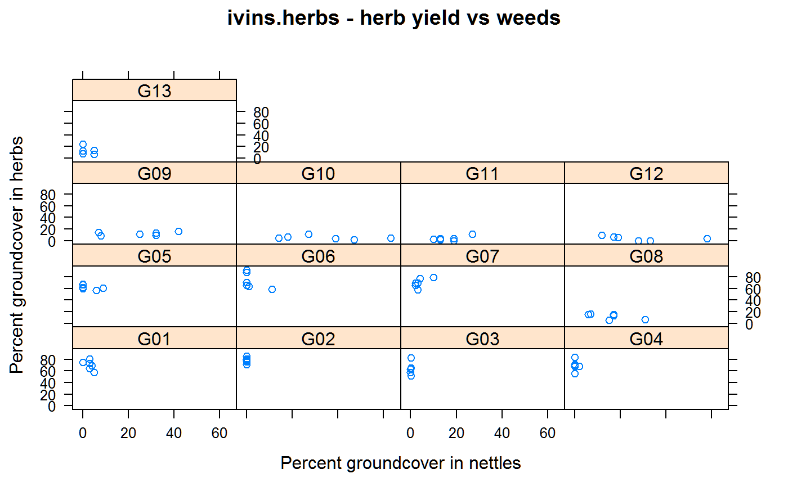

ivins.herbs.RdPercent ground cover of herbage species and nettles.
A data frame with 78 observations on the following 4 variables.
blockblock, 6 levels
gengenotype, 13 levels
nettlepercent ground cover of nettles
herbpercent ground cover of herbage species
On the University of Nottingham farm, 13 different strains and species of herbage plants were sown on about 4 acres in an RCB design. Each grass species was sown together with white clover seed.
During establishment of the herbage plants, it became apparent that Urtica dioica (nettle) became established according to the particular herbage plant in each plot. In particular, nettle became established in plots sown with leguminous species and the two grass species. The graminaceous plots had less nettles.
The data here are the percentage ground cover of nettle and herbage plants in September 1951.
Note, some of the percent ground cover amounts were originally reported as 'trace'. These have been arbitrarily set to 0.1 in this data.
| gen | species | strain |
| G01 | Lolium perenne | Irish perennial ryegrass |
| G02 | Lolium perenne | S. 23 perennial ryegrass |
| G03 | Dactylis glomerata | Danish cocksfoot |
| G04 | Dactylis glomerata | S. 143 cocksfoot |
| G05 | Phleum pratense | American timothy |
| G06 | Phleum pratense | S. 48 timothy |
| G07 | Festuca pratensis | S. 215 meadow fescue |
| G08 | Poa trivialis | Danish rough stalked meadow grass |
| G09 | Cynosurus cristatus | New Zealand crested dogstail |
| G10 | Trifolium pratense | Montgomery late red clover |
| G11 | Medicago lupulina | Commercial black medick |
| G12 | Trifolium repens | S. 100 white clover |
| G13 | Plantago lanceolata | Commercial ribwort plantain |
Ivins, JD. (1952). Concerning the Ecology of Urtica Dioica L., Journal of Ecology, 40, 380-382. http://doi.org/10.2307/2256806
Ivins, JD (1950). Weeds in relation to the establishment of the Ley. Grass and Forage Science, 5, 237--242. http://doi.org/10.1111/j.1365-2494.1950.tb01287.x
O'Gorman, T.W. (2001). A comparison of the F-test, Friedman's test, and several aligned rank tests for the analysis of randomized complete blocks. Journal of agricultural, biological, and environmental statistics, 6, 367--378. http://doi.org/10.1198/108571101317096578
library(agridat) data(ivins.herbs) dat <- ivins.herbs # Nettle is primarily established in legumes. libs(lattice) xyplot(herb~nettle|gen, dat, main="ivins.herbs - herb yield vs weeds", xlab="Percent groundcover in nettles", ylab="Percent groundcover in herbs")# O'Brien used first 7 species to test gen differences dat7 <- droplevels(subset(dat, is.element(gen, c('G01','G02','G03','G04','G05','G06','G07')))) m1 <- lm(herb ~ gen + block, data=dat7) anova(m1) # gen p-value is .041#> Analysis of Variance Table #> #> Response: herb #> Df Sum Sq Mean Sq F value Pr(>F) #> gen 6 1083.24 180.540 2.5518 0.04072 * #> block 5 590.69 118.138 1.6698 0.17236 #> Residuals 30 2122.48 70.749 #> --- #> Signif. codes: 0 '***' 0.001 '**' 0.01 '*' 0.05 '.' 0.1 ' ' 1## Response: herb ## Df Sum Sq Mean Sq F value Pr(>F) ## gen 6 1083.24 180.540 2.5518 0.04072 * ## block 5 590.69 118.138 1.6698 0.17236 ## Residuals 30 2122.48 70.749 friedman.test(herb ~ gen|block, dat7) # gen p-value .056#> #> Friedman rank sum test #> #> data: herb and gen and block #> Friedman chi-squared = 12.286, df = 6, p-value = 0.05589 #>